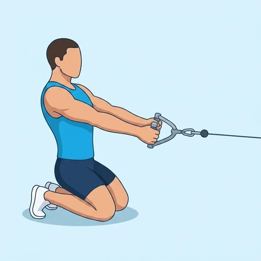

Kneeling Cable Row
A cable row performed from a tall kneeling position, eliminating hip drive and keeping tension on the upper back throughout.
Back · Cable Machine · Beginner


Muscles worked by the Kneeling Cable Row
Primary
Secondary
Also called: lats, lat, latissimus dorsi, latissimus, back wings.
Equipment
Also called: cable pulley, functional trainer, cable crossover, cable column, cable station, pulley machine.
How to do the Kneeling Cable Row
- Set a cable pulley to about chest height and attach a rope or double-D handle.
- Kneel upright facing the stack far enough back that the weight stack doesn't bottom out.
- Grab the handle with both hands and hold it out in front at chest height.
- Row the handle to the sternum by driving the elbows back and squeezing the shoulder blades together.
- Return under control to the stretched starting position.
- Repeat for the recommended number of repetitions.
Form tips
- Stay tall — no leaning back to finish the rep.
- The tall-kneeling stance forces the core to resist rotation on every pull.
At a glance
| Body part | Back |
|---|---|
| Category | Strength |
| Force type | Pull |
| Mechanic | Compound |
| Difficulty | Beginner |
| Equipment | Cable Machine |
| Goals | Hypertrophy |
| Tags | Pull day, Lower back safe |
| MET | 6.0 (metabolic equivalent, for calorie estimates) |
| Unilateral | No |
| Bodyweight | No |
| Dataset id | kneeling-cable-row |
Kneeling Cable Row in German & Spanish
| German | Kniender Kabelzug-Rudern |
|---|---|
| Spanish | Remo en Polea Arrodillado |
Descriptions, instructions and tips ship in all three languages in the JSON.
Related exercises
Exercise data (JSON)
The record below is exactly what exercises.json ships for this exercise — names, descriptions, instructions and tips in English, German and Spanish.
{
"id": "kneeling-cable-row",
"name_en": "Kneeling Cable Row",
"name_de": "Kniender Kabelzug-Rudern",
"name_es": "Remo en Polea Arrodillado",
"description_en": "A cable row performed from a tall kneeling position, eliminating hip drive and keeping tension on the upper back throughout.",
"description_de": "Kabelrudern in aufrechtem Knien, ohne Hüftschub – hält die Spannung durchgehend auf dem oberen Rücken.",
"description_es": "Un remo en polea ejecutado desde una posición de rodillas erguida, eliminando el impulso de cadera y manteniendo la tensión en la parte superior de la espalda durante todo el movimiento.",
"category": "strength",
"force_type": "pull",
"mechanic": "compound",
"difficulty": "beginner",
"equipment": "cable",
"body_part": "back",
"primary_muscles": [
"latissimus_dorsi"
],
"secondary_muscles": [
"biceps_brachii",
"posterior_deltoid",
"rhomboids",
"trapezius"
],
"goals": [
"hypertrophy"
],
"tags": [
"pull_day",
"lower_back_safe"
],
"is_unilateral": false,
"is_bodyweight": false,
"instructions_en": [
"Set a cable pulley to about chest height and attach a rope or double-D handle.",
"Kneel upright facing the stack far enough back that the weight stack doesn't bottom out.",
"Grab the handle with both hands and hold it out in front at chest height.",
"Row the handle to the sternum by driving the elbows back and squeezing the shoulder blades together.",
"Return under control to the stretched starting position.",
"Repeat for the recommended number of repetitions."
],
"instructions_de": [
"Stelle den Kabelzug auf etwa Brusthöhe ein und befestige ein Seil oder einen Doppelanker.",
"Kniele aufrecht vor dem Gerät, weit genug entfernt, damit das Gewicht nicht aufsetzt.",
"Greife den Griff mit beiden Händen und halte ihn auf Brusthöhe vor dir.",
"Rudere den Griff zum Brustbein, indem du die Ellbogen nach hinten ziehst und die Schulterblätter zusammendrückst.",
"Kehre kontrolliert in die gestreckte Ausgangsposition zurück.",
"Wiederhole für die empfohlene Anzahl an Wiederholungen."
],
"instructions_es": [
"Ajusta la polea a la altura del pecho y conecta una cuerda o un mango doble en D.",
"Arrodíllate erguido frente a la máquina lo suficientemente lejos para que el peso no llegue al tope.",
"Agarra el mango con ambas manos y sostenlo extendido frente a ti a la altura del pecho.",
"Lleva el mango hacia el esternón llevando los codos hacia atrás y apretando los omóplatos.",
"Regresa de forma controlada a la posición inicial con estiramiento.",
"Repite el número de repeticiones recomendado."
],
"tips_en": [
"Stay tall — no leaning back to finish the rep.",
"The tall-kneeling stance forces the core to resist rotation on every pull."
],
"tips_de": [
"Bleib aufrecht – kein Zurücklehnen zum Abschluss der Wiederholung.",
"Der aufrechte Kniestand zwingt den Rumpf, bei jedem Zug die Rotation zu stabilisieren."
],
"tips_es": [
"Mantente erguido: no te inclines hacia atrás para terminar la repetición.",
"La postura de rodillas erguidas obliga al core a resistir la rotación en cada tirón."
],
"met": 6.0,
"images": {
"flat": {
"start": "images/flat/kneeling-cable-row-start.webp",
"peak": "images/flat/kneeling-cable-row-peak.webp"
}
}
}Fetch just this exercise
const { exercises } = await fetch(
"https://exercise-dataset.com/exercises.json"
).then(r => r.json());
const ex = exercises.find(e => e.id === "kneeling-cable-row");Free for personal and commercial in-app use with attribution (“Exercise data by RepDB”) — see the license and ready-made attribution snippets. Redistributing the data as a dataset or API is not permitted.